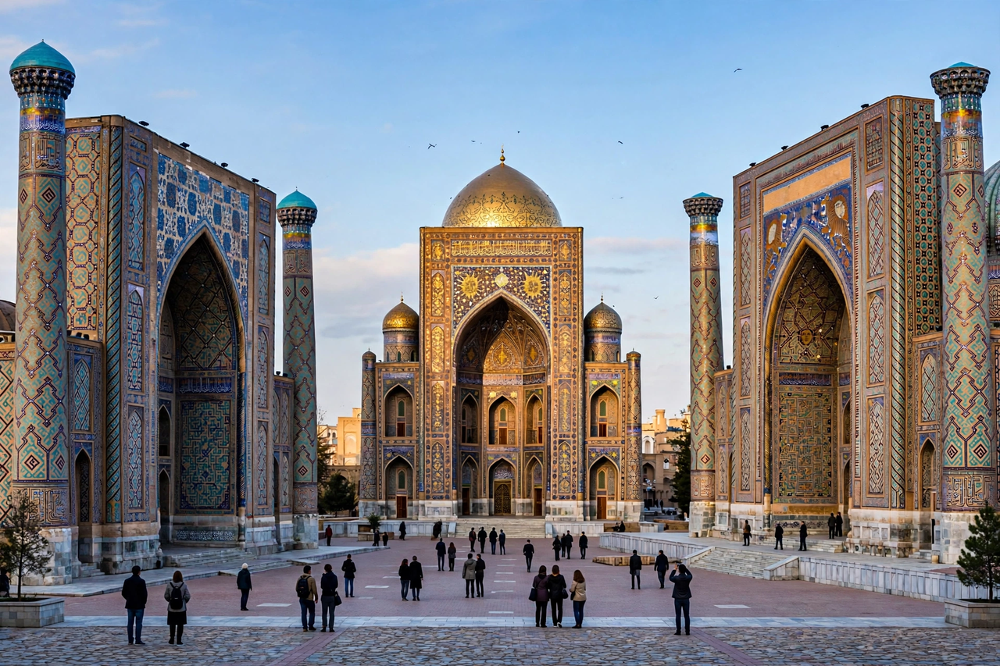

Wikipedia — the free encyclopedia

| Country | Uzbekistan |
| Founded | c. 700 BC (as Maracanda) |
| Status | UNESCO World Heritage Site |
Samarkand is a city in southeastern Uzbekistan and one of the oldest continuously inhabited cities in Central Asia. Standing on the Silk Road between China and the Mediterranean, it prospered from Persian, Greek, Arab, Mongol and Turkic rule in succession. Its name survives in the legend of the golden road to Samarkand.
Amir Timur (Tamerlane) made Samarkand his imperial capital after 1370 and filled it with monumental architecture: the Bibi-Khanym Mosque, the Gur-e-Amir mausoleum (his own tomb), the Shah-i-Zinda necropolis and the Registan square with its three madrasas, the latest built under the Shaybanids. Ulugbek, Timur's grandson, made it a centre of astronomy.
Samarkand is Uzbekistan's second city and a centre of Tajik culture in the country; its historic centre is a UNESCO World Heritage Site.